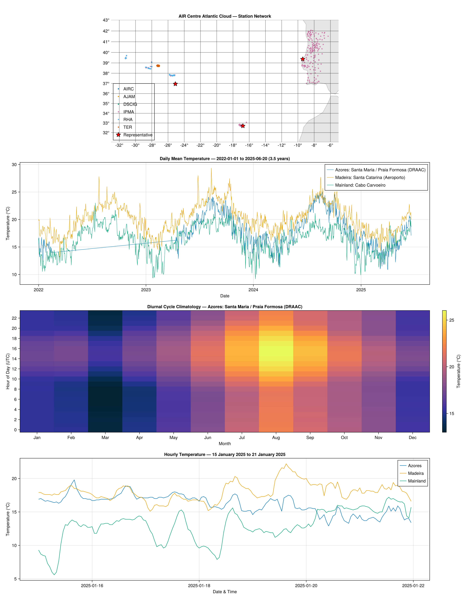

Examples
Atlantic weather showcase
The figure below demonstrates the package's core capabilities: station discovery, bulk observation retrieval, and DataFrame conversion — all visualised with CairoMakie.jl.

Panel 1 — Station network. All 342 stations plotted by longitude and latitude, coloured by data source (IPMA, RHA, DSCIG, AIRC, AJAM, TER). Red stars mark the representative stations used in the time series below.
Panel 2 — Hourly temperature. One month of hourly temperature data for three stations spanning the Atlantic region. The latitudinal temperature gradient is clearly visible: Madeira (warmest), Azores (mid-range), and mainland Portugal (coolest, with larger diurnal swings).
Panel 3 — Data completeness. Observation counts per station for the same period, showing near-complete hourly coverage (~700 observations per station for 31 days).
Running the demo
The script lives in examples/atlantic_weather.jl with its own environment:
cd examples
julia --project=. -e 'using Pkg; Pkg.develop(path=".."); Pkg.add(["CairoMakie", "DataFrames"])'
export ATLANTICCLOUD_API_KEY="your_key_here"
julia --project=. atlantic_weather.jlKey code patterns
Fetch all stations and convert to a DataFrame:
using AtlanticCloud, DataFrames
client = AtlanticCloudClient()
stations = get_stations(client)
df = to_dataframe(stations)Bulk fetch observations for multiple stations:
using Dates
ids = [s.station_id for s in stations if s.station_id !== nothing]
obs = get_observations_bulk(client, ids,
start_date=Date(2024, 12, 1),
end_date=Date(2024, 12, 31),
metrics=["temperature_c"],
on_error=:warn)
df_obs = to_dataframe(obs)Use GeoInterface for spatial workflows:
import GeoInterface as GI
s = stations[1]
GI.geomtrait(s) # PointTrait()
GI.x(GI.PointTrait(), s) # longitude
GI.y(GI.PointTrait(), s) # latitudeStations implement PointTrait, so they work directly with GeoMakie, GeometryOps, GeoJSON.jl, and any other JuliaGeo-compatible package.
Brazilian rainfall data
The API provides access to the UNIPLU-BR dataset: 21,000+ rain gauges across all 27 Brazilian states, with records from 1885 to 2025 at hourly and daily resolution.
Fetch stations by country and state
using AtlanticCloud, DataFrames, Dates
client = AtlanticCloudClient()
# All Brazilian stations
br = get_stations(client, country="BR")
println("Brazilian stations: $(length(br))")
# Stations in São Paulo
sp = get_stations(client, country="BR", state="SP")
df = to_dataframe(sp)Query rainfall observations
# Hourly rainfall for a state
obs = get_br_observations(client,
resolution="hourly", state="AC",
start_date=Date(2020, 1, 1),
end_date=Date(2020, 1, 31))
df = to_dataframe(obs)
# Daily rainfall for a single station
daily = get_br_observations(client,
resolution="daily", station_id="1442032",
start_date=Date(2020, 1, 1),
end_date=Date(2020, 6, 30))
# Only clean (non-suspect) observations
clean = get_br_observations(client,
resolution="hourly", state="MG",
start_date=Date(2020, 6, 1),
end_date=Date(2020, 6, 30),
flagged=false)Bulk fetch across stations
ids = [s.station_id for s in sp if s.station_id !== nothing]
bulk = get_br_observations_bulk(client, ids[1:10],
resolution="hourly",
start_date=Date(2020, 1, 1),
end_date=Date(2020, 1, 7),
on_error=:warn)
df_bulk = to_dataframe(bulk)